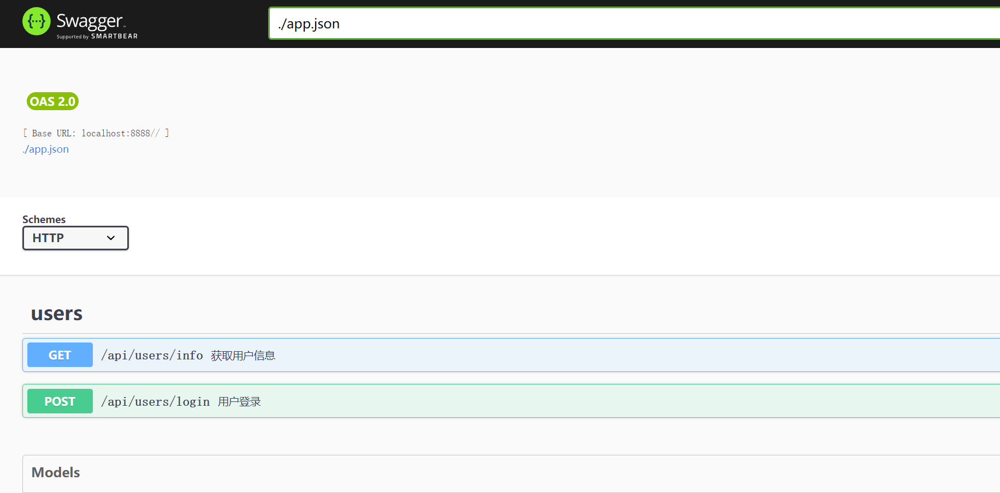

go-zero API：代码生成与路由
api文件就是对这个服务所有api的描述
服务名，函数名，路径，请求方法，请求参数，响应参数
我们以用户管理的两个重要接口为例，去编写它的api文件
@handler 是 go-zero API 语法注解，作用：指定当前路由对应的业务处理函数名。
- 代码生成器（
goctl api go）根据这个名字自动生成 handler 层代码 - 决定生成的文件名、结构体、方法名
- 绑定路由 → 业务逻辑入口
internal/types是统一存放请求体、响应体、枚举、公共结构体的地方 由goctl自动把.api里的type结构体统一抽离生成
Go复制代码
type LoginRequest {
UserName string `json:"userName"`
Password string `json:"password"`
}
type Response {
Code int `json:"code"`
Data string `json:"data"`
Msg string `json:"msg"`
}
type UserInfo {
UserName string `json:"userName"`
Addr string `json:"addr"`
Id uint `json:"id"`
}
type UserInfoResponse {
Code int `json:"code"`
Data UserInfo `json:"data"`
Msg string `json:"msg"`
}
service users {
@handler login
post /api/users/login (LoginRequest) returns (Response)
@handler userInfo
get /api/users/info returns (UserInfoResponse)
}
//goctl api go -api user.api -dir ./
通过这个示例，我们发现实际操作起来还是有些问题
- 响应如何封装？
- 统一api前缀
- 用户信息接口应该要进行jwt验证
- api文档
响应封装
不把code，data，msg写在api里面，我们通过封装统一响应
在统一响应里面去加上code data msg
Go复制代码
type LoginRequest {
UserName string `json:"userName"`
Password string `json:"password"`
}
type UserInfoResponse {
UserName string `json:"userName"`
Addr string `json:"addr"`
Id uint `json:"id"`
}
service users {
@handler login
post /login (LoginRequest) returns (string)
@handler userInfo
get /info returns (UserInfoResponse)
}
// goctl api go -api v1.api -dir .
在common/response/enter.go中
这个文件中使用到的httpx 接口 :
它是 go-zero 自己封装的 HTTP 工具包
httpx.WriteJson→ 写 JSON 响应httpx.OkJson→ 成功返回httpx.ErrorCtx→ 错误返回httpx.Parse→ 自动绑定参数Go Package...
Go复制代码
package response
import (
"github.com/zeromicro/go-zero/rest/httpx"
"net/http"
)
type Body struct {
Code uint32 `json:"code"`
Msg string `json:"msg"`
Data interface{} `json:"data"`
}
// Response http返回
func Response(r *http.Request, w http.ResponseWriter, resp interface{}, err error) {
if err == nil {
//成功返回
r := &Body{
Code: 0,
Msg: "成功",
Data: resp,
}
httpx.WriteJson(w, http.StatusOK, r)
return
}
//错误返回
errCode := uint32(10086)
// 可以根据错误码，返回具体错误信息
errMsg := "服务器错误"
httpx.WriteJson(w, http.StatusBadRequest, &Body{
Code: errCode,
Msg: errMsg,
Data: nil,
})
}
修改一下handler的响应逻辑
Go复制代码
l := logic.NewLoginLogic(r.Context(), svcCtx)
resp, err := l.Login(&req)
response.Response(r, w, resp, err)
然后完善逻辑即可
Go复制代码
func (l *LoginLogic) Login(req *types.LoginRequest) (resp string, err error) {
// todo: add your logic here and delete this line
fmt.Println(req.UserName, req.Password)
return "xxxx.xxxx.xxx", nil
}
模板定制化
当然官方提供了修改模板的方式，避免每次生成都要去改
https://go-zero.dev/docs/tutorials/customization/template
先全局搜一下 handler.tpl这个文件
如果没有就先用这个命令生成
Go复制代码
goctl template init
修改为：
Go复制代码
package handler
import (
"net/http"
"github.com/zeromicro/go-zero/rest/httpx"
"go_test/common/response"
{{.ImportPackages}}
)
func {{.HandlerName}}(svcCtx *svc.ServiceContext) http.HandlerFunc {
return func(w http.ResponseWriter, r *http.Request) {
{{if .HasRequest}}var req types.{{.RequestType}}
if err := httpx.Parse(r, &req); err != nil {
httpx.Error(w, err)
return
}{{end}}
l := logic.New{{.LogicType}}(r.Context(), svcCtx)
{{if .HasResp}}resp, {{end}}err := l.{{.Call}}({{if .HasRequest}}&req{{end}})
{{if .HasResp}}response.Response(r, w, resp, err){{else}}response.Response(r, w, nil, err){{end}}
}
}
api前缀
对于用户服务而言，api的前缀都是 /api/users
/api 前缀 = 隔离路由 + 版本控制 + 统一中间件 + 方便部署 + 前端好管理。
Gin 小项目可以不加，但 go-zero / 微服务 / 线上项目 必须加，规范就是效率。
Go复制代码
@server (
prefix: /api/users
)
service users {
@handler login
post /login (LoginRequest) returns (string)
@handler userInfo
get /info returns (UserInfoResponse)
}
jwt及验证
Go复制代码
type LoginRequest {
UserName string `json:"userName"`
Password string `json:"password"`
}
type UserInfoResponse {
UserName string `json:"userName"`
Addr string `json:"addr"`
Id uint `json:"id"`
}
@server(
prefix: /api/users
)
service users {
@handler login
post /login (LoginRequest) returns (string)
}
@server(
jwt: Auth
prefix: /api/users
)
service users {
@handler userInfo
get /info returns (UserInfoResponse)
}
转换之后，修改配置文件
AccessExpire的单位是秒
Go复制代码
Name: users
Host: 0.0.0.0
Port: 8888
Auth:
AccessSecret: 12345678
AccessExpire: 3600
jwt公共代码
Go复制代码
package jwts
import (
"errors"
"github.com/golang-jwt/jwt/v4"
"time"
)
// JwtPayLoad jwt中payload数据
type JwtPayLoad struct {
UserID uint `json:"user_id"`
Username string `json:"username"` // 用户名
Role int `json:"role"` // 权限 1 普通用户 2 管理员
}
type CustomClaims struct {
JwtPayLoad
jwt.RegisteredClaims
}
// GenToken 创建 Token(实现签发jwt)
func GenToken(user JwtPayLoad, accessSecret string, expires int64) (string, error) {
claim := CustomClaims{
JwtPayLoad: user,
RegisteredClaims: jwt.RegisteredClaims{
ExpiresAt: jwt.NewNumericDate(time.Now().Add(time.Hour * time.Duration(expires))),
},
}
token := jwt.NewWithClaims(jwt.SigningMethodHS256, claim)
return token.SignedString([]byte(accessSecret))
}
// ParseToken 解析 token
func ParseToken(tokenStr string, accessSecret string, expires int64) (*CustomClaims, error) {
token, err := jwt.ParseWithClaims(tokenStr, &CustomClaims{}, func(token *jwt.Token) (interface{}, error) {
return []byte(accessSecret), nil
})
if err != nil {
return nil, err
}
if claims, ok := token.Claims.(*CustomClaims); ok && token.Valid {
return claims, nil
}
return nil, errors.New("invalid token")
}
在登录成功之后签发jwt
loginlogic.go
Go复制代码
func (l *LoginLogic) Login(req *types.LoginRequest) (resp string, err error) {
// todo: add your logic here and delete this line
auth := l.svcCtx.Config.Auth
token, err := jwts.GenToken(jwts.JwtPayLoad{
UserID: 1,
Username: "枫枫",
Role: 1,
}, auth.AccessSecret, auth.AccessExpire)
if err != nil {
return "", err
}
return token, err
}
然后在userinfologic里面加上必要的逻辑
Go复制代码
func (l *UserInfoLogic) UserInfo() (resp *types.UserInfoResponse, err error) {
// todo: add your logic here and delete this line
userId := l.ctx.Value("user_id").(json.Number)
fmt.Printf("%v, %T, \n", userId, userId)
username := l.ctx.Value("username").(string)
uid, _ := userId.Int64()
return &types.UserInfoResponse{
UserId: uint(uid),
Username: username,
}, nil
}
userinfo这个接口就已经自动加上jwt的验证了
不过这个token是需要这样加
Go复制代码
headers:{
Authorization: "Bearer token"
}
没有通过jwt的响应是401，这个需要留意一下
当然，也能修改jwt验证的响应
在main中，加上jwt验证的回调函数即可
Go复制代码
func main() {
flag.Parse()
var c config.Config
conf.MustLoad(*configFile, &c)
server := rest.MustNewServer(c.RestConf, rest.WithUnauthorizedCallback(JwtUnauthorizedResult))
defer server.Stop()
ctx := svc.NewServiceContext(c)
handler.RegisterHandlers(server, ctx)
fmt.Printf("Starting server at %s:%d...\n", c.Host, c.Port)
server.Start()
}
// JwtUnauthorizedResult jwt验证失败的回调
func JwtUnauthorizedResult(w http.ResponseWriter, r *http.Request, err error) {
fmt.Println(err) // 具体的错误，没带token，token过期？伪造token？
httpx.WriteJson(w, http.StatusOK, response.Body{10087, "鉴权失败", nil})
}
生成api文档
后端对外的api，肯定要和前端进行对接
那么在go-zero里面怎么生成api接口文档呢
- 安装goctl-swagger
Go复制代码
go install github.com/zeromicro/goctl-swagger@latest
- 生成app.json
如果没有doc目录，需要创建
Go复制代码
goctl api plugin -plugin goctl-swagger="swagger -filename app.json -host localhost:8888 -basepath /" -api v1.api -dir ./doc
- 使用docker，查看这个swagger页面
Go复制代码
docker run -d --name swag -p 8087:8080 -e SWAGGER_JSON=/opt/app.json -v D:\IT\go_project3\go_test\v1\api\doc\:/opt swaggerapi/swagger-ui
可以再完善下api信息
Go复制代码
@server(
prefix: /api/users
)
service users {
@doc(
summary: "用户登录"
)
@handler login
post /login (LoginRequest) returns (string)
}
@server(
jwt: Auth
prefix: /api/users
)
service users {
@doc(
summary: "获取用户信息"
)
@handler userInfo
get /info returns (UserInfoResponse)
}
改为再重新生成一下 json

但是，我发现这个swagger体验不怎么好，使用了自定义响应之后，swag这里改不了
公司项目的话，都是有自己的api平台
团队项目的话，也可以用apifox
所以，个人用swagger的话，凑活着用也不是不行
参考文档
api语法 https://blog.csdn.net/chinus_yan/article/details/129674455
官方api规范 https://go-zero.dev/docs/tutorials#token
go-zero使用jwt https://blog.csdn.net/Mr_XiMu/article/details/128343072
自定义jwt错误 https://blog.csdn.net/gzyx1988/article/details/128991504
goctl-swagger的坑 https://www.cnblogs.com/eatfishcat/p/17238521.html
goctl-swagger使用 https://blog.csdn.net/weixin_49369316/article/details/129439722